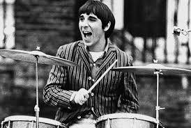
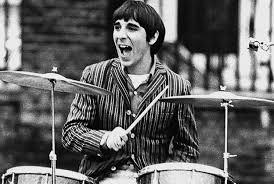

John Bonham (Led Zeppelin)
Donnernde Beats und kraftvolles Spiel, das den Sound von Led Zeppelin prägte und Generationen von Schlagzeugern inspirierte.
Keith Moon (The Who)
Bekannt für seinen explosiven Stil, der das Rock-Schlagzeugspiel revolutionierte und The Who ihren unverwechselbaren Sound verlieh.
Ginger Baker (Cream, Blind Faith, Ginger Baker’s Air Force)
Ein Pionier des Jazz-Rock, der mit seinen experimentellen Rhythmen und innovativen Techniken Grenzen sprengte.
Neil Peart (Rush)
Meister der komplexen Rhythmen und präzisen Technik, der das progressive Schlagzeugspiel auf ein neues Level hob.
Mitch Mitchell (The Jimi Hendrix Experience)
Kombinierte Jazz- und Rock-Elemente, um den psychedelischen Sound der Jimi Hendrix Experience zu formen.